AI/ML
MCP tool design: Practical approaches and tradeoffs
In this post, we show where MCP tool design goes wrong and how to fix it with practical context engineering approaches. Many teams start by exposing an existing API as-is and trusting the agent to figure out the rest.
원문 보기